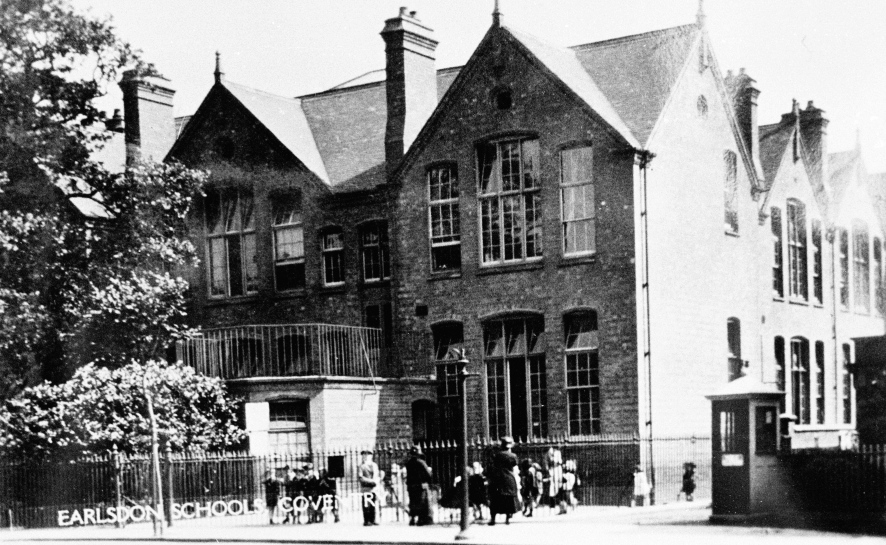

Earlsdon School On 24 April 1882 a tiny school was opened on the Earlsdon Estate with a headmaster, an assistant mistress and 73 children. It had opened in response to a directive from the Central Education Committee in London, who felt that if all children on the estate were to be expected to attend school, then local provision had to be made. It was too much to expect very small and frail children to walk into the city. So a small committee of residents was formed, headed by James Walker, a watchcase manufacturer living in Earlsdon Lane (now Earlsdon Avenue South). Earlsdon's first school was not on its present site but in an old ribbon weaving shed in Cromwell Street (now Berkeley Road South). Under the leadership of headmaster Charles Correlli Johnson the new school grew rapidly and conditions in the shed worsened, particularly in hot weather. Within two or three years there were regularly 140 or more children crammed into the small space and it was obvious that a new purpose built school was needed.
So in 1889 the site on Earlsdon Lane (now Earlsdon Avenue North) was purchased and in the middle of 1890 building started. By 7 November 1890 the new school was completed and ready for occupation and a new era began. However with the enormous growth in the local population at the turn of the century even the new school proved inadequate and some new classrooms were built in 1902.
Within four years with even more children coming into the area a further major extension was needed and a second storey was added. Now the building became more or less as it appears to today, but whereas in those days it catered for all ages from 5 to 14 and provided a complete elementary education, now it is Earlsdon's Primary School and the children go on to schools elsewhere in the city at the age of 11. From Schooldays Remembered by Mary Montes |